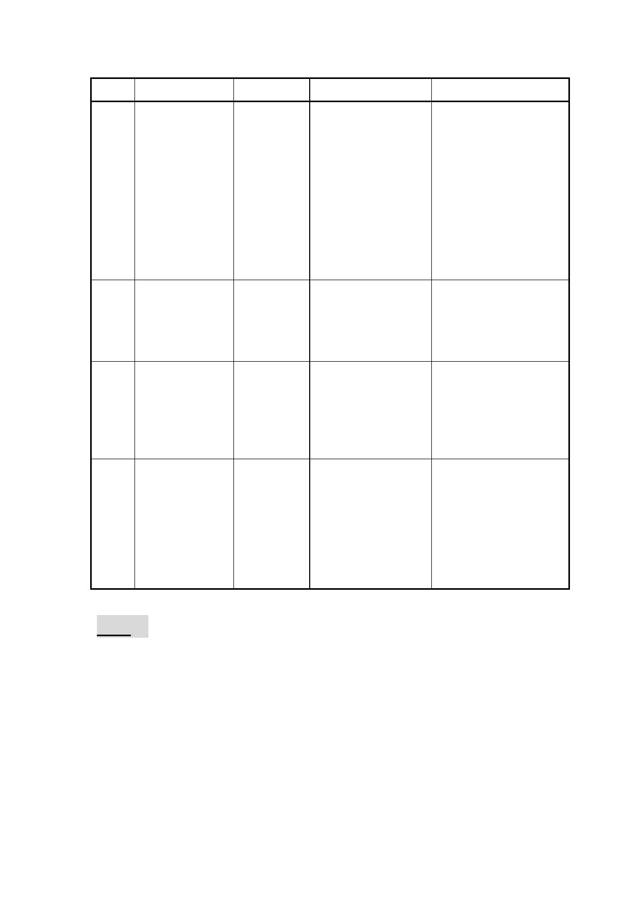

編號
2
3
4
5
案名
(薇閣小學變更
案)變更臺北市
北投區泉源段
四小段 771 地號
等 7 筆土地保護
區及新民段二
小段 125-1 地號
等 3 筆土地住宅
區為文教區主
要計畫暨擬定
細部計畫案
臺北市士林區
都市計畫通盤
檢討（主要計
畫）案
召集人
(已卸任)
黃委員世孟
「 修 訂 本 市 都 黃委員志弘
市計畫『臺北市
都市計畫劃定
山坡地開發建
築管制規定第
一點』案」
「 臺 北 市 內 湖 (已卸任)
區都市計畫通
盤檢討（主要計
畫）案」及「臺
北市內湖區都
市計畫通盤檢
討（細部計畫）
案
原小組成員
李委員永展
(財政局局長)
(工務局局長)
(地政局局長)
李委員永展
黃委員台生
黃委員志弘
(財政局局長)
(交通局局長)
黃委員世孟
李委員永展
(交通局局長)
(工務局局長)
(地政局局長)
黃委員台生
李委員永展
(交通局局長)
處理建議
俟市府依「全市性保護
區處理原則」檢討結果
提會說明後，再行確定
後續審議程序。
俟市府依「全市性保護
區處理原則」檢討結果
提會說明後，再行確定
後續審議程序。
1.循例續由原小組召集
人召集專案會議。
2.另簽請主任委員指派
相關權責及專長之
委員參與
俟市府依「全市性保護
區處理原則」檢討結果
提會說明後，再行確定
後續審議程序。
決議：
一、洽悉。
二、「修訂本市都市計畫『臺北市都市計畫劃定山坡地開發
建築管制規定第一點』案」，仍請黃委員志弘續任召集
人；「士林區都市計畫通盤檢討主要計畫案」，仍請黃委
員世孟續任召集人；召集人如有需要主任委員出席會議
或提供任何協助，可直接洽本會幕僚同仁。專案小組成
4